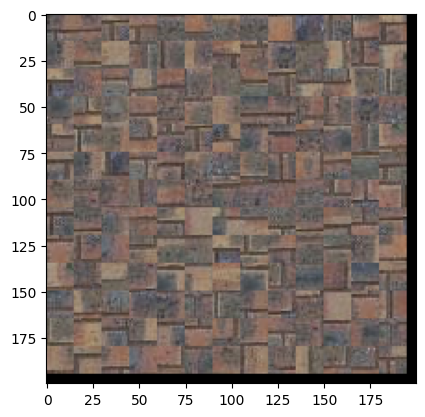
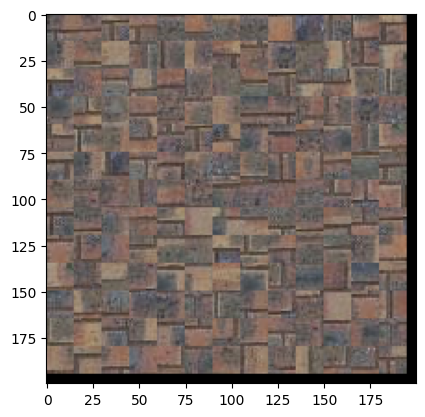

In this project, we implement the "image quilting" and "texture transfer" algorithms described in "Image Quilting for Texture Synthesis and Transfer" (Efros, Freeman).
Texture synthesis is the creation of a similar but different version of a "texture image", or an image with repeated patterns. We begin with a highly naive approach to texture synthesis: we fill the patches of an output image by repeatedly sampling random patches from an input image.
 

The resulting output is poor because it is clearly "blocky".
A better approach to texture synthesis is to overlap the output patches and fill them in raster-scan order. To fill an output patch, we compute how well each input patch overlaps with the already-filled portion of the output patch. We set tol=5; in other words, one of the five best input patches is chosen at random to fill the output patch.

The official image quilting algorithm eliminates "blocky" results by establishing curved boundaries between output patches. Once we have chosen an input patch to fill an output patch, we compute a curved cut along the output patch's overlapping portion. In particular, we compute the cut that minimizes the difference between existing pixels and new pixels along the path of the cut.